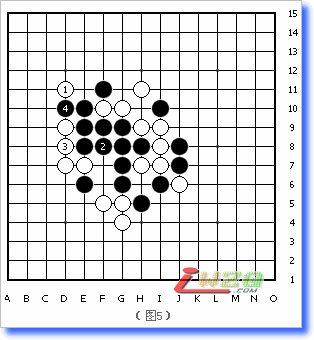

夏止防守详解及其应用
#1 夏止防守详解及其应用 作者：有志青年 发表时间：2008-1-12 21:38:59
夏止防守的叫法来自日本，就是间隔一子防守的方法，通常包括三种类型。
图中A、B、C点均为夏止防守的防点，代表了三种类型。
1、A点是左边有对手的子挡住。
2、B点是左边有盘端挡住。
3、C点是右边形成禁手，无法落子，相当于一端被挡住。
下面我们利用夏止防来做一个题目。（图2），黑已经形成双杀，一个在A、B形成VCF胜，一个在C点形成四三胜，轮到白方走子，还有防吗？
这个题目实际上就是防点的判断题目，思路就是先找出A/B这个VCF的所有防点，再找出C点这个四三所有的防点，然后找这个杀所有防点的交集就可以了。
我在教程里不断的强调过，找防点一定要记得按种类去寻找，防点是分为三种类型的：
1、直接防守的点
2、利用反四的防点
3、利用禁手的防点
因此，一说找防点，脑海之中要浮现出这三种类型，然后挨次去寻找。
好了，有了思路，我们就可以做题了，先来找A、B这个VCF的防点。
我们会发现，一共有A~G一共7个防点，都是直接防守的点，利用反四和禁手的点不存在。这里要注意别漏掉G点，这个是夏止防，它的右边有白子挡住。
我们再来找四三的防点。
找完之后，我们会发现，哎呀，竟然有这么多防点。其中A~E是直接防守的点，其中E点是夏止防，容易漏掉，它的另一端有禁手的存在。F~K点是利用反四的防点。
在这些防点里面，F点虽然可以形成反四，但黑方还有反中反的手段，导致这个防点无效。
如图，白1防守，黑2四三，白3虽然形成反四，但黑4挡住后形成活四了，这是反中反，白防守失败。

综上所述，你找到这两个杀的共同防点了吗？只有一个防点，可以起到双防的作用，就是四三防守图中的E点。
通过做这个题目，主要是学会防点的判断方法，更要学会夏止防的防守方法。
【转载自五子茶馆】
#2 Re:夏止防守详解及其应用 作者：xlxyz 发表时间：2008-1-25 10:15:28
好帖，顶了~~~#3 Re:夏止防守详解及其应用 作者：紗耶香 发表时间：2008-2-3 9:07:21
为什么一端的子被挡住就叫夏止防呢 图3里的F,A点为什么不能叫夏止防- -
#4 Re:夏止防守详解及其应用 作者：五子天下 发表时间：2008-2-15 9:56:34
不错不错 学到了#5 Re:夏止防守详解及其应用 作者：百医天使 发表时间：2008-2-18 18:38:48
夏止是从日文中来的吧，没什么特别的意义中里面，说的就是这个形式的防守，我们也可以起个中文的名字嘛